Apply a theme to every panel
{gratia}’s draw() combines the individual plots for
model terms into one figure using {patchwork}. The &
operator applies a {ggplot2} theme to every panel, so you can style them
together.
Load the plotting packages and simulate 400 observations. The
covariates are independent and range from zero to one. Three have
nonlinear effects on the mean response; x3 has no true
effect. Independent Gaussian noise adds variation with standard
deviation 2.
library("gratia")
load_mgcv()
library("ggplot2")
library("dplyr")
#>
#> Attaching package: 'dplyr'
#> The following objects are masked from 'package:stats':
#>
#> filter, lag
#> The following objects are masked from 'package:base':
#>
#> intersect, setdiff, setequal, union
library("patchwork")
# simulate data
n <- 400
eg1 <- data_sim("eg1", n = n, seed = 1)Fit a Gaussian GAM with one smooth for each covariate. REML selects the smoothness; we will reuse this fitted model throughout the plotting examples.
# fit model
m <- gam(y ~ s(x0) + s(x1) + s(x2) + s(x3),
data = eg1, method = "REML")Save the default figure as p so we can apply different
styles to the same fitted smooths.
p <- draw(m)
p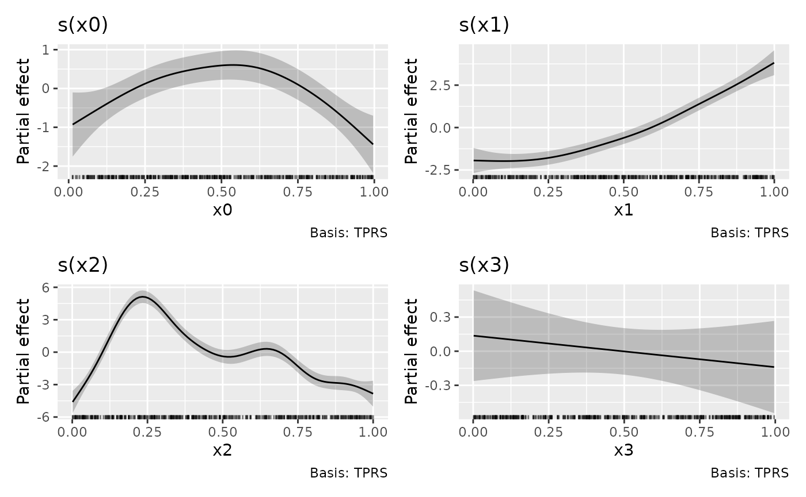
Adding a theme with + changes only the last panel in
this combined figure. The following example makes that behaviour
visible: only the final smooth receives the white background from
theme_bw().
p + theme_bw()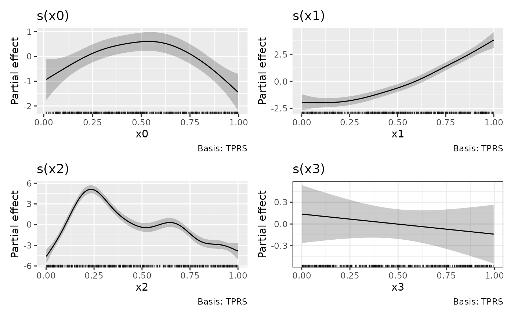
Use & to apply the same theme to all four
panels.
p & theme_bw()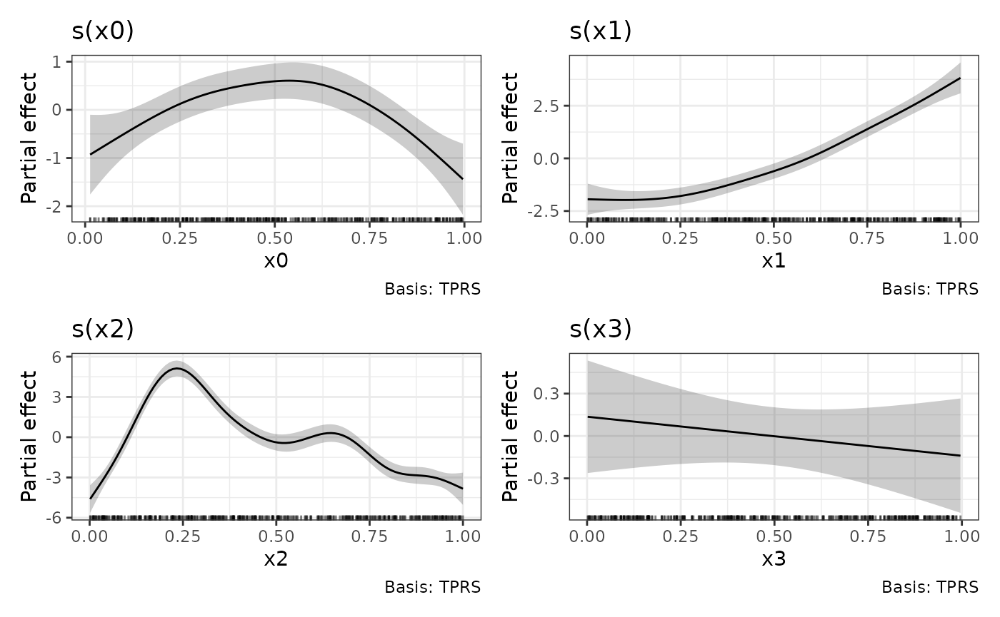
Change curve colours, intervals and other plot components
gratia has theme settings for smooth curves, interval ribbons, residual points and reference lines. Here we make every smooth navy, give it a thicker line and use a pale navy interval ribbon.
p & theme(
geom.gratia.smooth = element_geom(colour = "navy", linewidth = 0.8),
geom.gratia.interval = element_geom(fill = "navy"),
gratia.alpha.interval = 0.15
)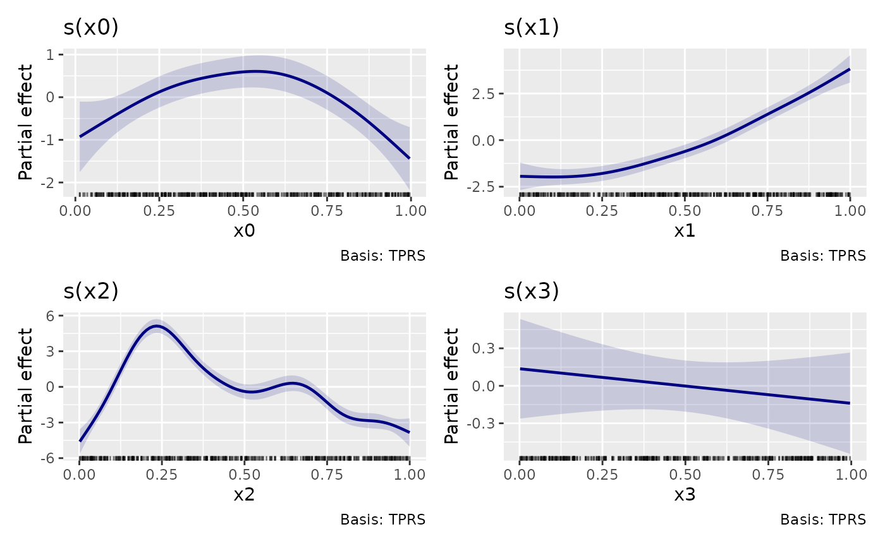
Use geom.gratia.partial.residual for partial residuals,
geom.gratia.diagnostic.point for diagnostic points, and
geom.gratia.reference for reference lines. Opacity uses
numeric settings such as gratia.alpha.interval and
gratia.alpha.diagnostic.point. More specific settings, such
as geom.gratia.smooth.interval, override the general
interval setting. See ?gratia_theme_get for the component
list.
Use gratia_theme_set() when you want subsequent gratia
figures to share a style. Save its return value so you can restore the
previous settings after drawing the figure.
old_theme <- gratia_theme_set(theme(gratia.alpha.interval = 0.1))
draw(m)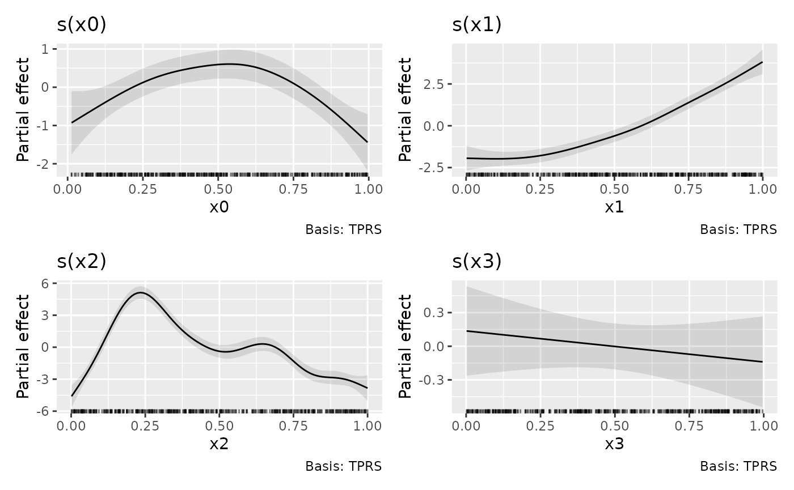
gratia_theme_set(old_theme)These settings affect gratia plots created afterwards. For a
temporary change, you can instead use withr::with_options()
with the gratia.plot.theme option. If you have older code
using arguments such as smooth_col or
ci_alpha, replace those arguments with theme settings as
shown above.
Common replacements for deprecated arguments are:
| Previous argument | Theme setting |
|---|---|
smooth_col |
geom.gratia.smooth = element_geom(colour = ...) |
ci_col, ci_alpha
|
geom.gratia.interval = element_geom(fill = ...),
gratia.alpha.interval
|
resid_col |
geom.gratia.partial.residual = element_geom(colour = ...) |
contour_col |
geom.gratia.contour = element_geom(colour = ...) |
point_col, point_alpha in
diagnostics |
geom.gratia.diagnostic.point = element_geom(colour = ...),
gratia.alpha.diagnostic.point
|
line_col in diagnostics |
geom.gratia.diagnostic.reference = element_geom(colour = ...) |
colour, alpha in smooth
samples |
geom.gratia.sample = element_geom(colour = ...),
gratia.alpha.sample
|
ci_3d_col, ci_3d_alpha
|
geom.gratia.surface.interval = element_geom(fill = ...),
gratia.alpha.surface.interval
|
alpha, linewidth in chain
diagnostics |
gratia.alpha.chain,
geom.gratia.chain = element_geom(linewidth = ...)
|
Use geom.gratia.effect for parametric curves and
geom.gratia.derivative for derivatives. Rootograms have
separate rootogram.bar, rootogram.fitted,
rootogram.reference and rootogram.warning
elements. MRF interval lines use
geom.gratia.smooth.interval, independently of the points
controlled by geom.gratia.smooth. Diagnostic boxplots use
geom.gratia.diagnostic.boxplot.
Laying out labels, legends and colour bars
Long labels can overlap when several plots share a figure. Use
draw_label_control() to choose wrapping widths and guide
layouts, then pass the result as label_control to
draw() or assemble(). The configuration works
across drawing methods.
For a categorical axis, wrapping breaks long labels into lines and
n_dodge staggers labels across rows. We simulate
observations in three fishing categories so we can illustrate both
options. The response combines a curved effect of day, a difference
between categories and independent Gaussian noise of standard deviation
0.3.
set.seed(430)
fishing <- data.frame(
day = runif(150, 0, 300),
angler_type = factor(rep(c("Boat (guided)", "Boat (unguided)", "Shore"), 50))
)
fishing$y <- sin(fishing$day / 60) +
c(0, -0.8, -0.3)[as.integer(fishing$angler_type)] + rnorm(150, sd = 0.3)Fit a GAM with a smooth effect of day and a parametric effect of fishing category. Wrap the fishing-category labels and stagger them over two rows.
fishing_model <- gam(y ~ angler_type + s(day, k = 8),
data = fishing, method = "REML")
axis_layout <- draw_label_control(axes = list(wrap = 12, n_dodge = 2))
draw(fishing_model, label_control = axis_layout, ncol = 2)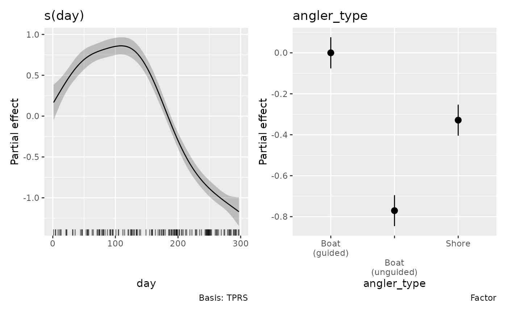
Legends have their own wrapping width and can arrange their entries
into rows or columns. Compare the fitted day smooth with one that has a
smaller basis and no smoothing penalty (fx = TRUE). The
smaller basis limits how much the curve can bend. Use descriptive labels
for the two fits and wrap the entries in a single legend column.
simple_fishing <- gam(y ~ angler_type + s(day, k = 3, fx = TRUE),
data = fishing, method = "REML")
comparison <- compare_smooths(fishing_model, simple_fishing, n = 50)
comparison$.model <- factor(comparison$.model,
levels = c("fishing_model", "simple_fishing"),
labels = c("More flexible curve across the season", "Less flexible curve across the season"))
legend_layout <- draw_label_control(
legend = list(wrap = 22, title_wrap = 18, ncol = 1)
)
draw(comparison, label_control = legend_layout)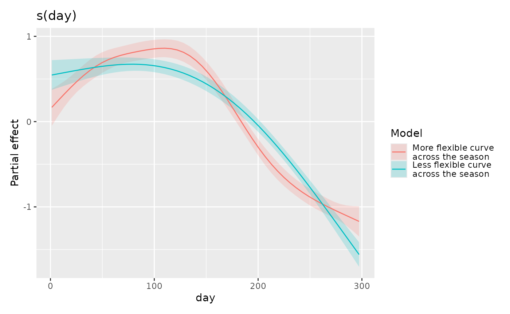
Colour bars can wrap their titles, rotate their tick labels, and change their displayed dimensions. The following pairwise concurvity plot shows how closely each smooth can be approximated by another smooth in the four-smooth model. The fill scale supplies the title and the label control wraps it and sets the bar height. Use the scale to set the palette, breaks and numeric labels.
bar_layout <- draw_label_control(
axes = list(wrap = 15),
colourbar = list(title_wrap = 18, height = grid::unit(35, "mm"))
)
draw(model_concurvity(m, pairwise = TRUE),
continuous_colour = scale_fill_viridis_c(name = "Concurvity between model terms"),
label_control = bar_layout)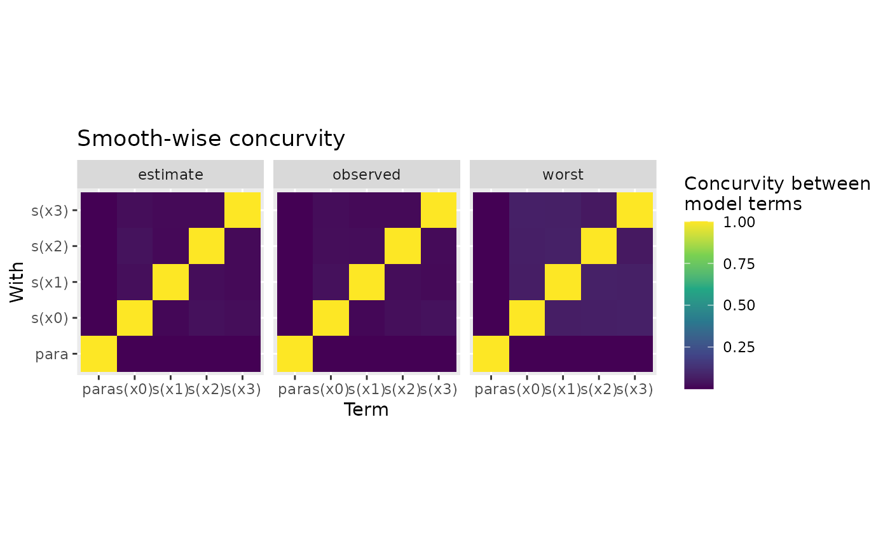
Wrapping happens after scale labels have been formatted, preserving
custom labels, mathematical expressions and explicit line breaks. Use
axes = list(title_wrap = ...) to wrap axis titles. Wrapping
and staggering tick labels applies only to discrete axes.
Use a different palette for groups
Grouped curves and ribbons use the Okabe–Ito palette for up to nine groups, and a hue palette for more than nine. Supply a palette function to both the colour and fill theme settings to keep each model’s curve and interval the same colour. Here we use Paul Tol’s bright palette for the model comparison.
tol <- gratia_palette("tol_bright")
draw(comparison) &
theme(palette.colour.discrete = tol, palette.fill.discrete = tol)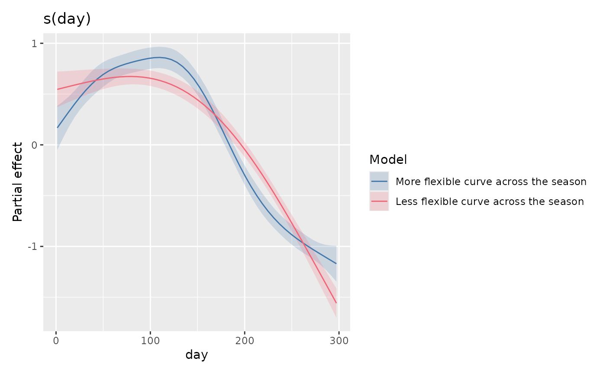
Paul Tol choices include bright and vibrant (7 colours), muted (9),
dark (11), and banded schemes (12, 16 or 20). The dark palette is
designed for a white background. Choose a palette with enough colours
for all your groups. A request for more colours than the palette
provides gives an error. See ?gratia_palette for available
names.
Continuous palettes can also be changed through
palette.fill.continuous and
palette.colour.continuous. Existing scale arguments still
accept complete scales when custom transformations, breaks or guides are
needed.
Combining individual plots produced by draw()
Each draw() result is already a combined figure, even if
it contains only one smooth. When combining several results, specify
their layout explicitly. First, here is the error that can occur when
those dimensions are omitted.
p1 <- draw(m, select = "s(x0)")
p2 <- draw(m, select = "s(x1)")
p3 <- draw(m, select = "s(x2)")
p1 + p2 + p3
#> Error in `wrap_dims()`:
#> ! Need 3 panels, but together `nrow` and `ncol` only provide 1.
#> ℹ Please increase `ncol` and/or `nrow`.Add plot_layout(ncol = 3) to place the three results in
one row.
p1 + p2 + p3 + plot_layout(ncol = 3)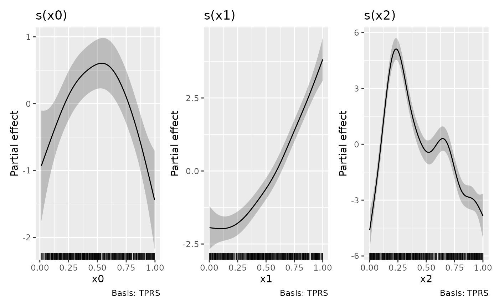
When all smooths come from the same model, select them in one
draw() call and supply ncol directly.

The explicit layout is useful when the plots come from different models or need to be arranged with other ggplot2 figures.
Grouping factor smooths and showing their intervals
grouped selects which factor smooth types share a plot.
Choose any of "factor-by", "sz", and
"fs". Types omitted from the vector are drawn separately
for each level, or each evaluated combination of levels for
sz terms with several factors. show_ci
independently selects which of these types show interval ribbons. These
controls apply to curves with one continuous covariate; ordinary smooths
and surface plots retain their displays.
The defaults, grouped = c("sz", "fs") and
show_ci = c("factor-by", "sz"), retain the existing
grouping and interval visibility. Use FALSE to select none.
Separate curves use the usual univariate styling: a black fitted line
and a translucent black interval. We simulate x2 between
zero and one and use fac to identify three groups. The
response combines a different curve of x2 in each group
with independent Gaussian noise of standard deviation 2. We then fit
three ways of representing these relationships. A factor-by smooth fits
a curve for each group; an sz smooth represents group
deviations from a shared curve; an fs smooth estimates
group curves whose penalties share smoothing parameters.
factor_data <- data_sim("eg4", n = 400, seed = 244)Fit the three representations to the same data so we can compare how their group curves are displayed. Each model uses REML to select its smoothing parameters.
m_by <- gam(y ~ fac + s(x2, by = fac), data = factor_data, method = "REML")
m_sz <- gam(y ~ s(x2) + s(x2, fac, bs = "sz"),
data = factor_data, method = "REML")
m_fs <- gam(y ~ s(x2, fac, bs = "fs"),
data = factor_data, method = "REML")Overlay the factor-by curves with intervals:
draw(m_by, grouped = "factor-by", parametric = FALSE)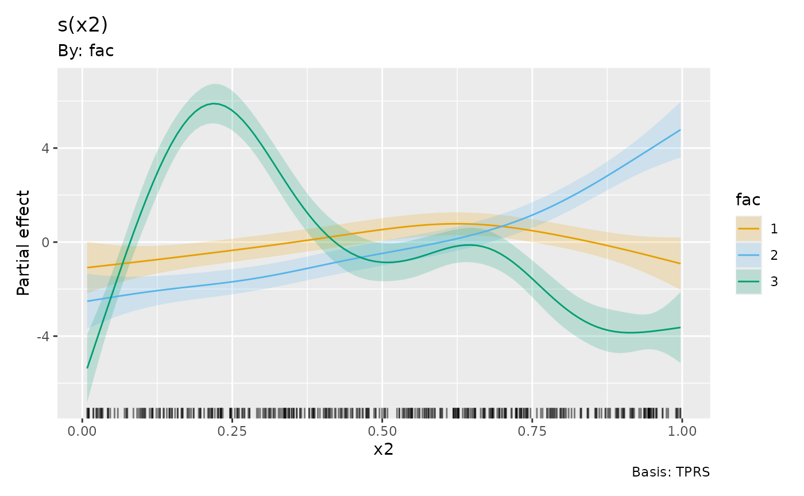
Separate the sz deviations and hide their intervals. The
ordinary smooth retains its interval:
draw(m_sz, grouped = FALSE, show_ci = "factor-by")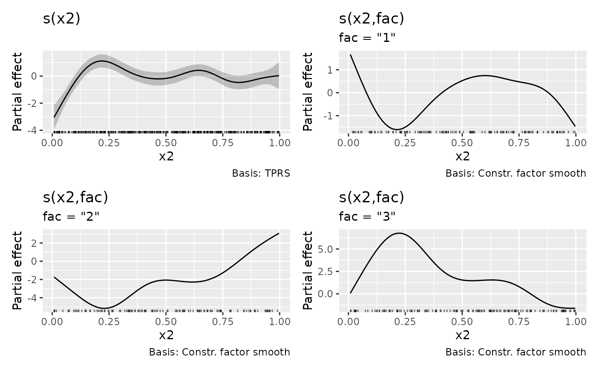
fs terms represent a fitted curve for each factor level.
Separate those curves and include their intervals with:
draw(m_fs, grouped = FALSE, show_ci = "fs")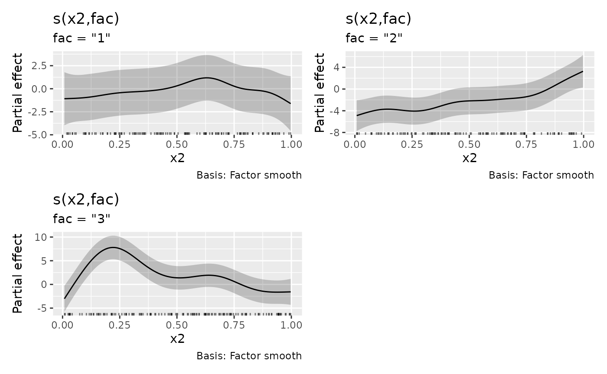
The same controls work with saved estimates. Grouping the curves or hiding their intervals leaves the saved estimates and interval limits intact. Here we draw each group deviation separately and omit its interval ribbon.
sz_estimates <- smooth_estimates(m_sz)
draw(sz_estimates, grouped = FALSE, show_ci = FALSE)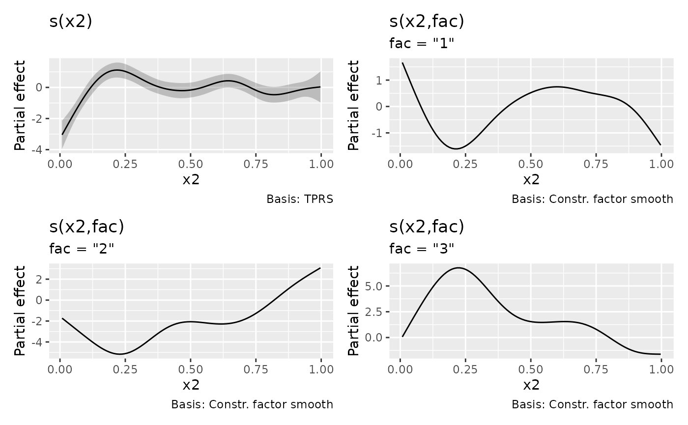
Ordered-factor by smooths use "factor-by"
too. In the following model, s(x2) is the reference smooth
and the ordered-factor terms describe deviations for the other levels.
Grouping overlays only those deviations; the reference smooth remains a
separate plot. No smooth is created for the ordered factor’s first
level, and the displayed deviations do not have the reference smooth
added to them.
factor_data$ordered_fac <- ordered(factor_data$fac)
m_ordered <- gam(y ~ fac + s(x2) + s(x2, by = ordered_fac),
data = factor_data, method = "REML")
draw(m_ordered, grouped = "factor-by", parametric = FALSE)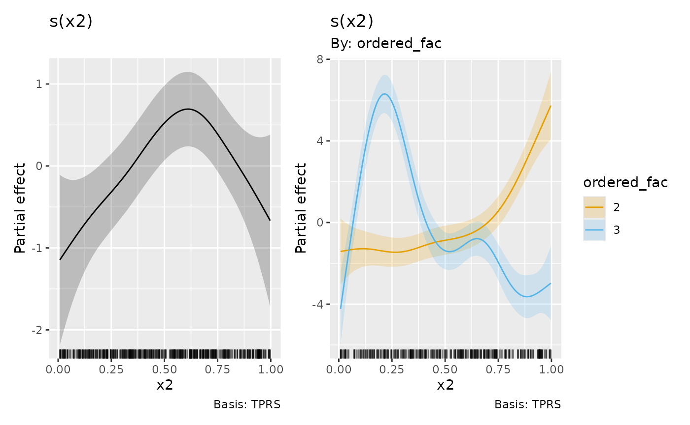
grouped_by is deprecated. Replace
grouped_by = TRUE with
grouped = c("factor-by", "sz", "fs"); replace
grouped_by = FALSE with
grouped = c("sz", "fs"). During migration, an explicit
grouped_by updates only "factor-by" membership
in grouped.
Drawing surfaces in 3D
With the optional {ggcube} package installed, use
surface = "3d" to view a two-dimensional smooth as a
surface. First simulate a nonlinear response over two covariates with
independent Gaussian noise of standard deviation 0.2, so the surface’s
peaks remain visible above the noise.
eg2 <- data_sim("eg2", n = 400, scale = 0.2, seed = 2)Fit a tensor product smooth with 15 basis functions per covariate to
allow enough flexibility for the nonlinear surface; REML selects its
smoothness. Then draw the smooth’s contribution to the linear predictor.
n_2d = 50 evaluates the surface on a 50-by-50 grid, and
yaw controls the viewing angle.
m_surface <- gam(y ~ te(x, z, k = c(15, 15)),
data = eg2, method = "REML")
draw(m_surface, surface = "3d", n_2d = 50,
surface_3d = list(yaw = 45, persp = FALSE))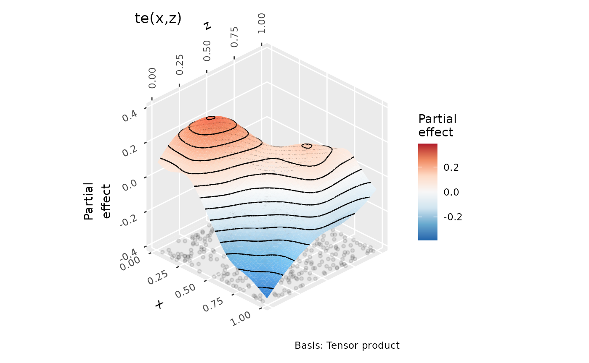
Pass camera settings through surface_3d, which forwards
them to ggcube::coord_3d(). For example,
persp = FALSE uses a parallel projection so distant parts
of the surface do not appear smaller.
The covariates form the two horizontal axes and the partial effect
forms the vertical axis. Use surface = "tile" for a flat
rectangular display or the default surface = "raster" for a
compact image. These choices display the same estimated effect.
Build a plot from smooth estimates and partial residuals
Themes control the appearance of plots returned by
draw(). To choose different layers or map additional
variables to aesthetics, build a plot from the estimates returned by
gratia.
First evaluate the fitted smooths with
smooth_estimates() and add pointwise interval limits with
add_confint(). Each row contains a value of the covariate,
the estimated smooth at that value and its interval limits.
# evaluate the smooths
sm <- smooth_estimates(m) |>
add_confint()
sm
#> # A tibble: 400 × 11
#> .smooth .type .by .estimate .se x0 x1 x2 x3 .lower_ci
#> <chr> <chr> <chr> <dbl> <dbl> <dbl> <dbl> <dbl> <dbl> <dbl>
#> 1 s(x0) TPRS NA -0.929 0.422 0.0131 NA NA NA -1.76
#> 2 s(x0) TPRS NA -0.881 0.396 0.0230 NA NA NA -1.66
#> 3 s(x0) TPRS NA -0.834 0.372 0.0329 NA NA NA -1.56
#> 4 s(x0) TPRS NA -0.786 0.348 0.0429 NA NA NA -1.47
#> 5 s(x0) TPRS NA -0.738 0.326 0.0528 NA NA NA -1.38
#> 6 s(x0) TPRS NA -0.690 0.305 0.0627 NA NA NA -1.29
#> 7 s(x0) TPRS NA -0.643 0.287 0.0727 NA NA NA -1.20
#> 8 s(x0) TPRS NA -0.595 0.270 0.0826 NA NA NA -1.12
#> 9 s(x0) TPRS NA -0.548 0.255 0.0925 NA NA NA -1.05
#> 10 s(x0) TPRS NA -0.501 0.242 0.102 NA NA NA -0.975
#> # ℹ 390 more rows
#> # ℹ 1 more variable: .upper_ci <dbl>To add partial residual points, use
add_partial_residuals() on the fitting data. In this
Gaussian model with an identity link, a partial residual for a smooth is
the observation minus the fitted intercept and the contributions of the
other terms. These are the points shown by
draw(m, residuals = TRUE).
# add partial residuals to data
eg1 <- eg1 |>
add_partial_residuals(m)The new columns use the smooth labels as names, such as
s(x0) and s(x1). Inspect the names so we can
select the column matching the smooth to plot.
names(eg1)
#> [1] "y" "x0" "x1" "x2" "x3" "f" "f0" "f1" "f2"
#> [10] "f3" "s(x0)" "s(x1)" "s(x2)" "s(x3)"Plot the smooth for x2 using five layers:
- a rug plot of the observed values of
x2, - the credible interval around the estimated smooth,
- the partial residuals as a point layer,
- the estimated smooth as a line layer,
- an axis label and title.
p_sx2 <- sm |>
filter(.smooth == "s(x2)") |>
ggplot() +
geom_rug(aes(x = x2),
data = eg1,
sides = "b", length = grid::unit(0.02, "npc")
) +
geom_ribbon(aes(ymin = .lower_ci, ymax = .upper_ci, x = x2),
alpha = 0.2
) +
geom_point(aes(x = x2, y = `s(x2)`),
data = eg1, size = 1.5, colour = "steelblue3"
) +
geom_line(aes(x = x2, y = .estimate), linewidth = 1.2) +
labs(y = "Partial effect", title = "s(x2)")
p_sx2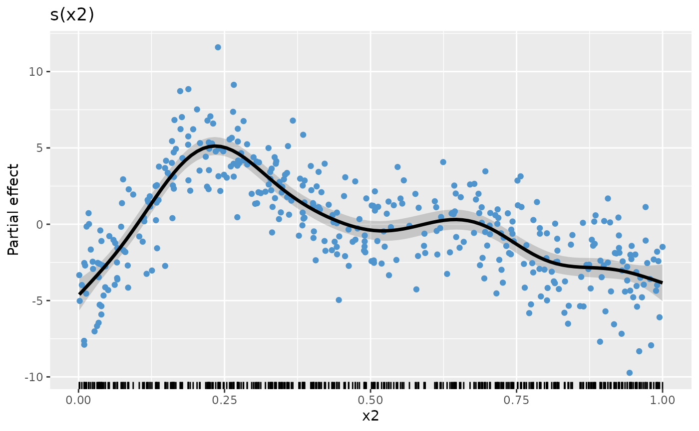
We prepare equivalent plots for the other three smooths to combine with this one below. Their construction repeats the same steps, so the code is hidden.
Combine the four plots and set ncol = 2 to arrange them
in two columns.
p_sx0 + p_sx1 + p_sx2 + p_sx3 + plot_layout(ncol = 2)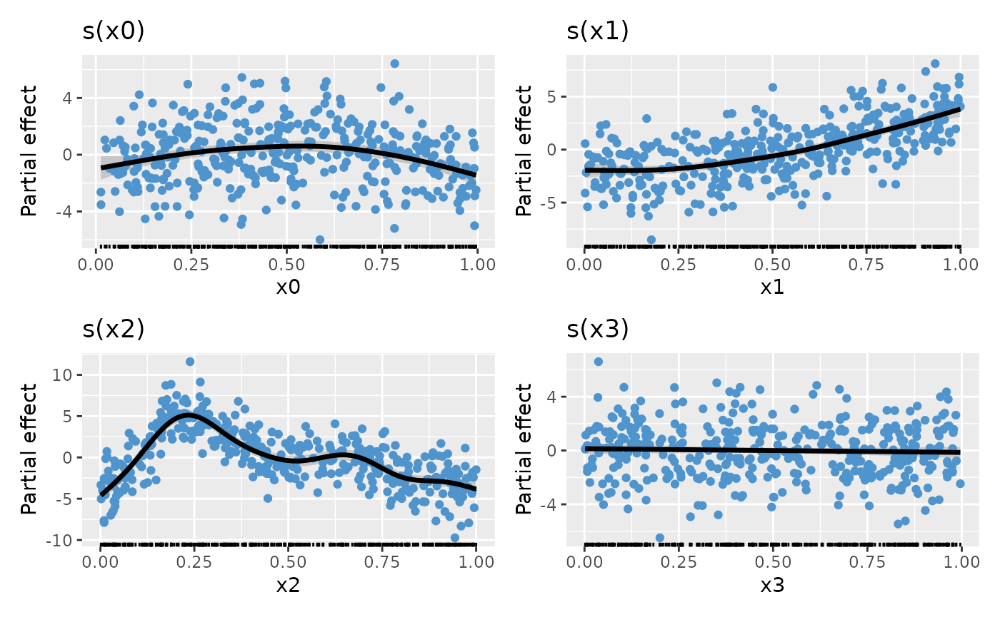
Colour partial residuals by another variable
A custom plot can show information beyond the variables in the fitted smooth. To demonstrate grouping, create an arbitrary four-level factor and use it to colour the residual points. This factor is unrelated to the simulated response and is used only to demonstrate the colour mapping.
Build the curve and interval first, then add the partial residuals
with fac mapped to colour. Adding the points last keeps
them visible above the interval ribbon.
plt <- sm |>
filter(.smooth == "s(x2)") |>
ggplot() +
geom_rug(aes(x = x2),
data = eg1,
sides = "b", length = grid::unit(0.02, "npc")
) +
geom_ribbon(aes(ymin = .lower_ci, ymax = .upper_ci, x = x2),
alpha = 0.2
) +
geom_line(aes(x = x2, y = .estimate), linewidth = 1.2) +
labs(y = "Partial effect", title = "s(x2)")
plt +
geom_point(
aes(
x = x2, y = `s(x2)`,
colour = fac
),
data = eg1, size = 1.5
)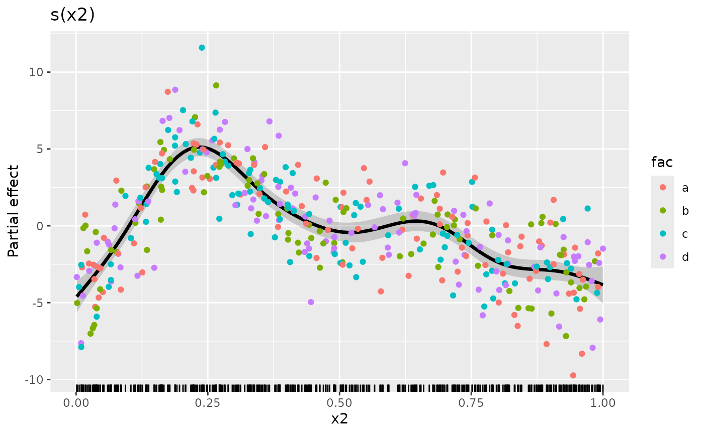
To look for patterns involving another fitted covariate, map
x1 to point colour and size. We remove the fixed point size
so it can vary with x1.
plt +
geom_point(
aes(
x = x2, y = `s(x2)`,
colour = x1, size = x1
),
data = eg1, alpha = 0.3
) +
scale_colour_viridis_c(option = "plasma")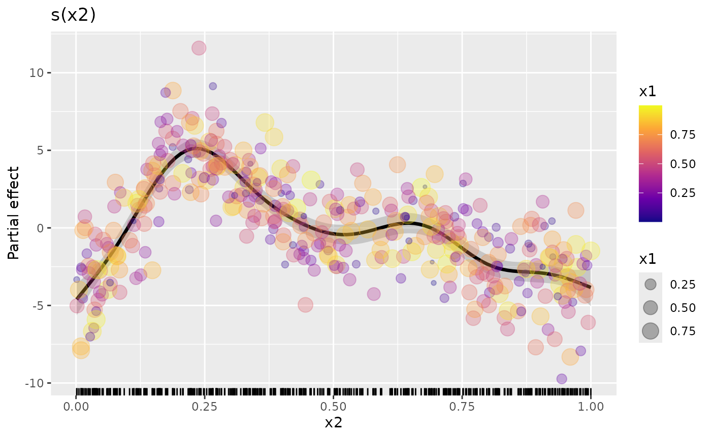
If points of the same colour consistently fall above or below the
fitted curve, residuals may still vary with x1. The model diagnostics article shows how to
check that pattern by plotting residuals directly against a
covariate.